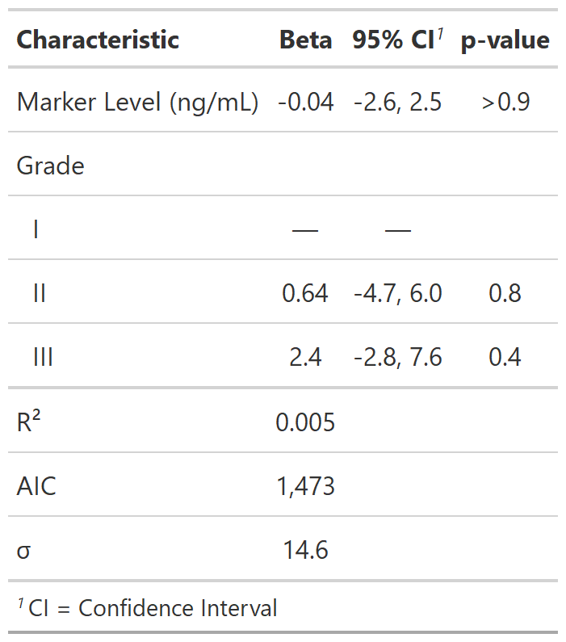

Add model statistics returned from broom::glance(). Statistics can either
be appended to the table (add_glance_table()), or added as a
table source note (add_glance_source_note()).
add_glance_table( x, include = everything(), label = NULL, fmt_fun = NULL, glance_fun = broom::glance ) add_glance_source_note( x, include = everything(), label = NULL, fmt_fun = NULL, glance_fun = broom::glance, text_interpret = c("md", "html"), sep1 = " = ", sep2 = "; " )
Arguments
| x | 'tbl_regression' object |
|---|---|
| include | list of statistics to include in output. Must be column
names of the tibble returned by |
| label | List of formulas specifying statistic labels,
e.g. |
| fmt_fun | List of formulas where the LHS is a statistic and the RHS
is a function to format/round the statistics. The default is to round
the number of observations and degrees of freedom to the nearest integer,
p-values are styled with |
| glance_fun | function that returns model statistics. Default is
|
| text_interpret | String indicates whether source note text
will be interpreted with
|
| sep1 | Separator between statistic name and statistic.
Default is |
| sep2 | Separator between statistics. Default is |
Value
gtsummary table
Default Labels
The following statistics have set default labels when printed.
When there is no default, the column name from broom::glance() is printed.
| Statistic Name | Default Label |
| r.squared | R² |
| adj.r.squared | Adjusted R² |
| p.value | p-value |
| logLik | Log-likelihood |
| statistic | Statistic |
| df.residual | Residual df |
| null.deviance | Null deviance |
| df.null | Null df |
| nevent | N events |
| concordance | c-index |
| std.error.concordance | c-index SE |
| nobs | No. Obs. |
| deviance | Deviance |
| sigma | Sigma |
Tips
When combining add_glance_table() with tbl_merge(), the
ordering of the model terms and the glance statistics may become jumbled.
To re-order the rows with glance statistics on bottom, use the script below:
tbl_merge(list(tbl1, tbl2)) %>% modify_table_body(~.x %>% arrange(row_type == "glance_statistic"))
Example Output
Example 1

Example 2

Examples
mod <- lm(age ~ marker + grade, trial) %>% tbl_regression() # Example 1 ---------------------------------- add_glance_ex1 <- mod %>% add_glance_table( label = list(sigma ~ "\U03C3"), include = c(r.squared, AIC, sigma) ) # Example 2 ---------------------------------- add_glance_ex2 <- mod %>% add_glance_source_note( label = list(sigma ~ "\U03C3"), include = c(r.squared, AIC, sigma) )